AMP环境搭建完成后，便可开始最后的工作——搭建WordPress站点了
目录
①下载与前期准备
②配置与使用WordPress
①下载与前期准备
使用Xshell连接到服务器控制台，使用cd回到用户的home目录
然后输入
wget https://cn.wordpress.org/wordpress-4.7.3-zh_CN.tar.gz
下载WordPress
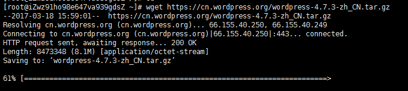
下载完成后，使用
tar -xzf wordpress-4.7.3-zh_CN.tar.gz
解压文件
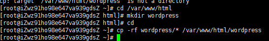
cd /var/www/html —— 移动到html主目录
mkdir wordpress —— 创建一个wordpress的子目录
cd —— 返回home目录
cp -rf wordpress/* /var/www/html/wordpress —— 将wordpress复制到子目录中
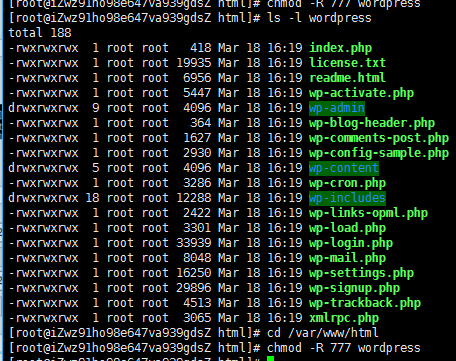
cd /var/www/html —— 进入wordpress的上级目录
chmod -R 777 wordpress —— 给予wordpress目录所有的权限
输入mysql -u root -p
进入数据库
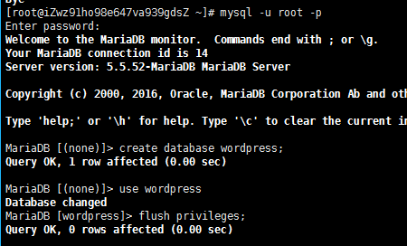输入create database wordpress;
flush privileges;
创建给WordPress的数据库
②配置与使用WordPress
在浏览器输入http://你的公网IP/wordpress/
开始配置WordPress
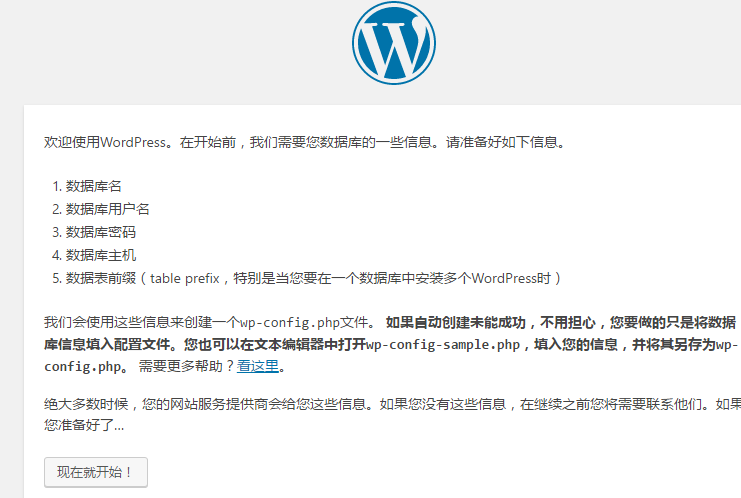 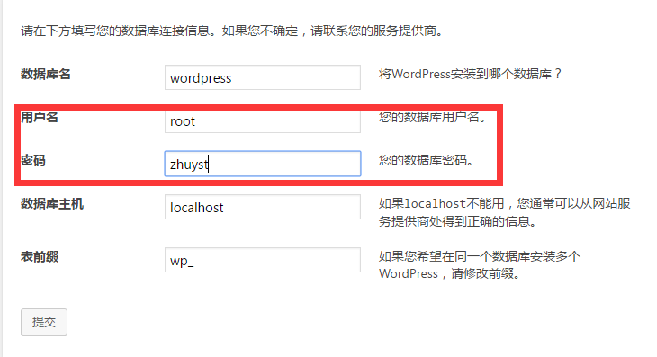用户名 —— root
密码 —— 在配置MariaDB时设置的密码
提交后就开始配置站点的基本信息了
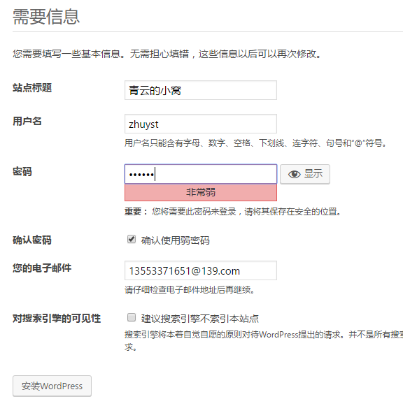站点标题 —— 你的博客名
用户名 —— 管理员账户的用户名
点击安装WordPress，安装完成
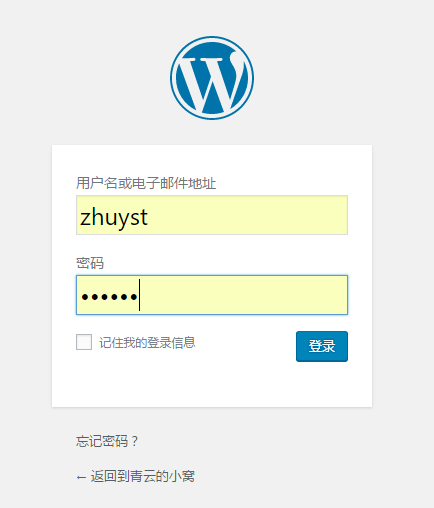
进入登陆界面，输入刚刚设置的账号密码登陆
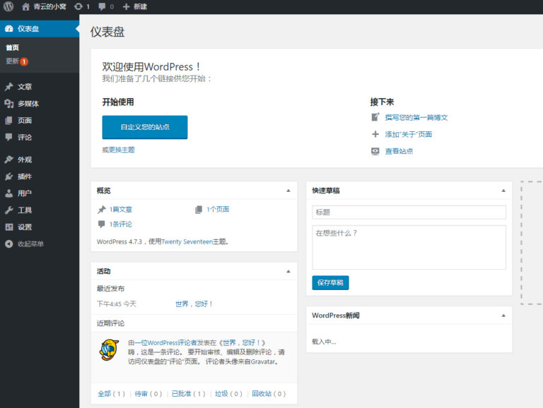
仪表盘 —— WordPress的后台
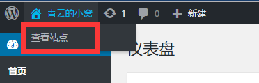
在左上角点击查看站点，便可以看到初始的WordPress界面了
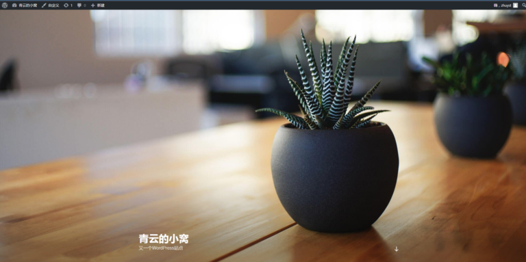
之后，使用http://你的公网IP/wordpress/
便可以访问属于你的博客了
至此，WordPress安装完毕
用户名
访客1
评论内容
访客2
评论内容
访客3
评论内容